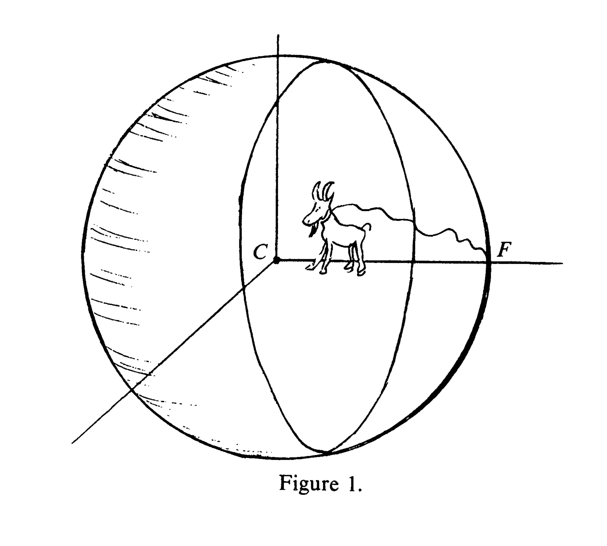

name:opening ## Big Biomedical Data Science Joshua T. Vogelstein <img src="images/neurodata_purple.png" style="height:300px; float:right;"/> <br><br><br><br><br><br><br><br><br><br> <img src="images/funding/jhu_bme_blue.png" STYLE="HEIGHT:95px;"/> <img src="images/funding/KNDI.png" STYLE="HEIGHT:95px;"/> .foot[[jovo@jhu.edu](mailto:jovo@jhu.edu) | <http://neurodata.io/talks/> | [@neuro_data](https://twitter.com/neuro_data)] --- class: middle, inverse .center[please interrupt] --- ### What is Big Biomedical Data Science? A field that develops and applies algorithms, statistical models, and (database / machine learning) systems to manage, visualize, wrangle, summarize, generalize, and control big data to improve health and healthcare. -- <br> <img src="images/big_biomedical_data_science.svg" STYLE="width:100%"/> -- data = genomics, imaging, electric health records, etc. --- class: middle, inverse ## .center[Why is it hard?] --- ### Reason #1: Evolution - 1 billion years of evolution for human perceptual capacities - 1 billion receptors at 1 kHz each is .r[1 terabit per second] - Minimize false *negatives*: is that a tiger? <img src="images/tiger.jpg" STYLE="width:90%"/> --- ### Reason #2: We Don't Know What Random Looks Like <img src="images/bitstring11.png" STYLE="width:100%"/> --- ### Reason #2: We Don't Know What Random Looks Like <img src="images/bitstring15.png" STYLE="width:100%;"/> --- ### Reason #3: Grazing Goat Starves  --- #### Reason #4: How many circles per square? <img src="images/circle_in_square.png" STYLE="width:50%"/> - ratio of volume of ball to cube with diameter 1 -- - volume of cube → 1 - volume of ball $\approx \frac{\pi^{n}}{n!}$ → 0 - ball contains no volume in high-dimensions --- #### Reason #4: How many circles per square? <img src="images/porcupine.jpg" STYLE="width:100%"/> - every additional dimension squares number of corners - cubes are pointy in high-dimesions --- ### Reason #5: Estimate mean - sample $x \sim \mathcal{N}_1(\mu,1)$, estimate $\mu$? -- - sample $[x_1, x_2] \sim \mathcal{N}_2([\mu_1, \mu_2], I)$, estimate $\mu = [\mu_1, \mu_2]$? -- - sample $[x_1, x_2, x_3] \sim \mathcal{N}_3(\mu, I)$, estimate $\mu$? The usual estimator of the mean of a multivariate Gaussian is inadmissable .footnote[Stein, 1956] --- ### Summary Don't trust intuition, it sucks at this. --- class: middle, inverse ## .center[Potential Solutions?] -- .center[(time check?)] --- ### #1: Build Better Human Brains 1. Impose selective pressures 1. wait 1,000 generations 2. have better human brains --- ### #2: Build Knowledge Systems <!-- <img src="images/LSVRC-winners-over-time.png" STYLE="width:100%"/> --> .center[ <img src="images/lion_uggie_basket.JPG" STYLE="width:50%"/> <!-- <img src="images/lion_parrots_upsidedown.jpg" STYLE="width:20%"/> --> ] --- ### #2: Build Knowledge Systems <!-- <img src="images/LSVRC-winners-over-time.png" STYLE="width:100%"/> --> .center[ <img src="images/lion_uggie_basket.JPG" STYLE="width:45%"/> <img src="images/lion_daddy_basket.JPG" STYLE="width:45%"/> ] .footnote[AI Winter #2] --- ### #3: Build Learning Systems <img src="images/compute_diagram-linear@2x-5.png" STYLE="width:100%"/> .footnote[AI Winter #3] --- ### Approaches that will fail 1. better human brains (evolution) 2. just parametric modeling (knowledge systems) 3. just deep learning (machine learning systems) --- ### Proposed Solution: AI Spring #4 1. Work together: AI + domain experts 2. Build probabilistic generative models using maximum amount of domain knowledge 3. Use those models to guide a search for low-dimensional latent structure --- #### How Many Points to Describe a Line? .center[<img src="images/line.png" STYLE="width:80%"/>] --- #### How Many Points to Describe a Plane? .center[<img src="images/lineplane2.gif" STYLE="width:90%"/>] --- ### Proposed Solution 1. Work together: AI + domain experts 2. Build probabilistic generative models using maximum amount of domain knowledge 3. Use those models to guide a search for low-dimensional latent structure - We need $\geq n$ points to describe a line in $n$ dimensions - Our $p > n$ - We need to **learn** a "line" works best - There are $\infty$, so need experts to help guide search --- ### Good News, Bad News - Good: you can, in theory, already do this - Bad: no idea of this will work. --- ### A Glimmer of Hope <img src="images/drosophila_graspy.png" STYLE="width:100%"/> --- ### Conclusions - big biomedical data science is hard - our intuitions are bad - success requires (swallowing pride): - convert your knowledge generative models - leverage models to guide search for "structure" in learning systems --- class:center <img src="images/lion_l2m.JPG" style="position:absolute; top:0px; left:0px; height:100%;"/> --- ### Acknowledgements <div class="small-container"> <img src="faces/cep.png"/> <div class="centered">Carey Priebe</div> </div> <div class="small-container"> <img src="faces/randal.jpg"/> <div class="centered">Randal Burns</div> </div> <div class="small-container"> <img src="faces/mim.jpg"/> <div class="centered">Michael Miller</div> </div> <div class="small-container"> <img src="faces/dtward.jpg"/> <div class="centered">Daniel Tward</div> </div> <div class="small-container"> <img src="faces/ebridge.jpg"/> <div class="centered">Eric Bridgeford</div> </div> <div class="small-container"> <img src="faces/vikram.jpg"/> <div class="centered">Vikram Chandrashekhar</div> </div> <div class="small-container"> <img src="faces/drishti.jpg"/> <div class="centered">Drishti Mannan</div> </div> <div class="small-container"> <img src="faces/jesse.jpg"/> <div class="centered">Jesse Patsolic</div> </div> <div class="small-container"> <img src="faces/falk_ben.jpg"/> <div class="centered">Benjamin Falk</div> </div> <div class="small-container"> <img src="faces/kwame.jpg"/> <div class="centered">Kwame Kutten</div> </div> <div class="small-container"> <img src="faces/perlman.jpg"/> <div class="centered">Eric Perlman</div> </div> <div class="small-container"> <img src="faces/loftus.jpg"/> <div class="centered">Alex Loftus</div> </div> <div class="small-container"> <img src="faces/bcaffo.jpg"/> <div class="centered">Brian Caffo</div> </div> <div class="small-container"> <img src="faces/minh.jpg"/> <div class="centered">Minh Tang</div> </div> <div class="small-container"> <img src="faces/avanti.jpg"/> <div class="centered">Avanti Athreya</div> </div> <div class="small-container"> <img src="faces/vince.jpg"/> <div class="centered">Vince Lyzinski</div> </div> <div class="small-container"> <img src="faces/dpmcsuss.jpg"/> <div class="centered">Daniel Sussman</div> </div> <div class="small-container"> <img src="faces/youngser.jpg"/> <div class="centered">Youngser Park</div> </div> <div class="small-container"> <img src="faces/cshen.jpg"/> <div class="centered">Cencheng Shen</div> </div> <div class="small-container"> <img src="faces/shangsi.jpg"/> <div class="centered">Shangsi Wang</div> </div> <div class="small-container"> <img src="faces/tyler.jpg"/> <div class="centered">Tyler Tomita</div> </div> <div class="small-container"> <img src="faces/james.jpg"/> <div class="centered">James Brown</div> </div> <div class="small-container"> <img src="faces/disa.jpg"/> <div class="centered">Disa Mhembere</div> </div> <div class="small-container"> <img src="faces/pedigo.jpg"/> <div class="centered">Ben Pedigo</div> </div> <div class="small-container"> <img src="faces/jaewon.jpg"/> <div class="centered">Jaewon Chung</div> </div> <div class="small-container"> <img src="faces/gkiar.jpg"/> <div class="centered">Greg Kiar</div> </div> <div class="small-container"> <img src="faces/jeremias.png"/> <div class="centered">Jeremias Sulam</div> </div> <span style="font-size:200%; color:red;">♥, 🦁, 👪, 🌎, 🌌</span> <img src="images/funding/nsf_fpo.png" STYLE="HEIGHT:95px;"/> <img src="images/funding/nih_fpo.png" STYLE="HEIGHT:95px;"/> <img src="images/funding/darpa_fpo.png" STYLE=" HEIGHT:95px;"/> <img src="images/funding/iarpa_fpo.jpg" STYLE="HEIGHT:95px;"/> <img src="images/funding/KAVLI.jpg" STYLE="HEIGHT:95px;"/> <img src="images/funding/schmidt.jpg" STYLE="HEIGHT:95px;"/> --- ### Four V's of big data - volume - velocity - variety - veracity --- ### Drosophila Brain Networks <img src="images/Fig15-new.png" style="width:800px;"/> --- ### Geodesic Learning Drosophila Brain <img src="images/drosphila_precision_recall.png" style="width:800px;"/>